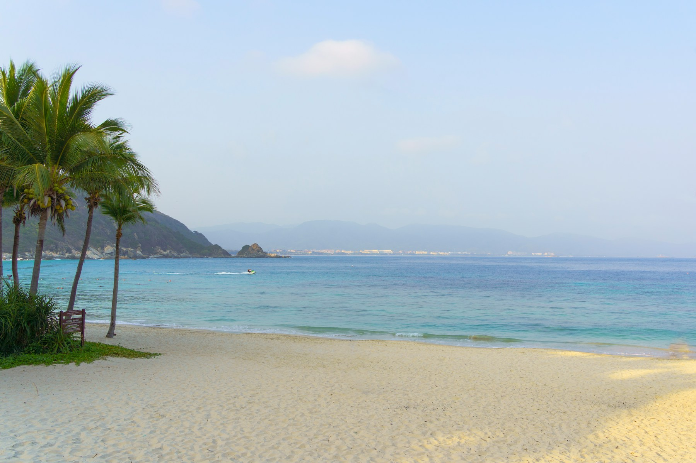
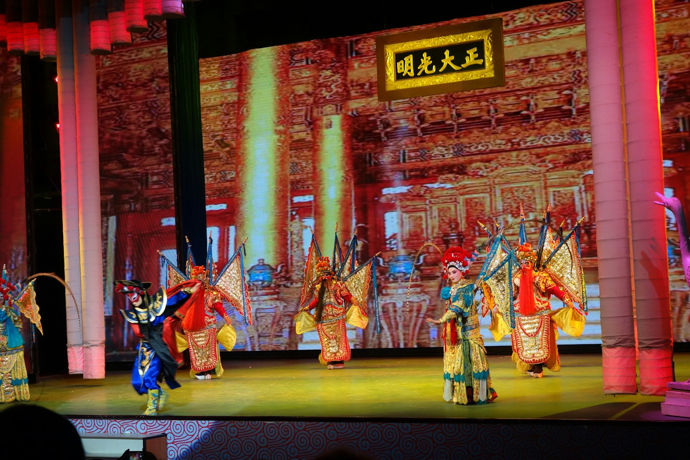
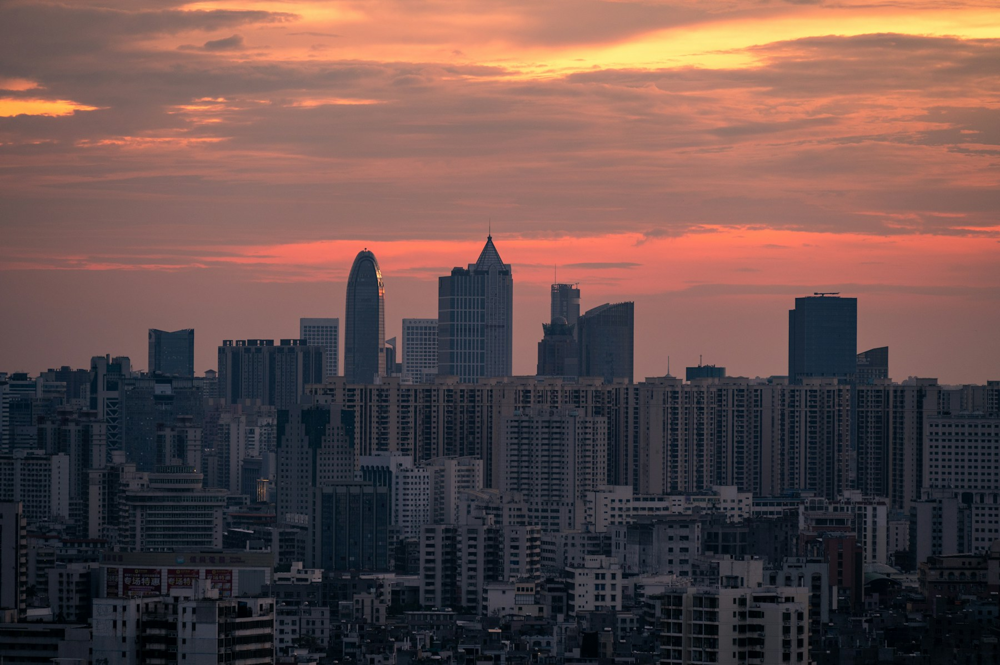
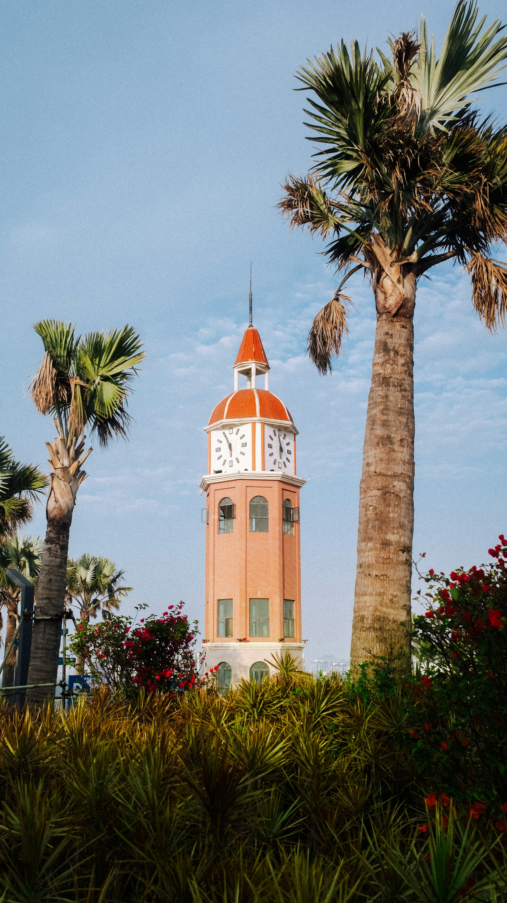
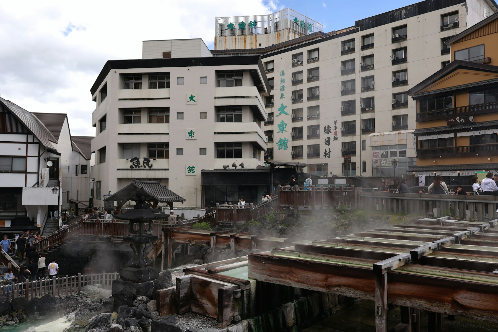
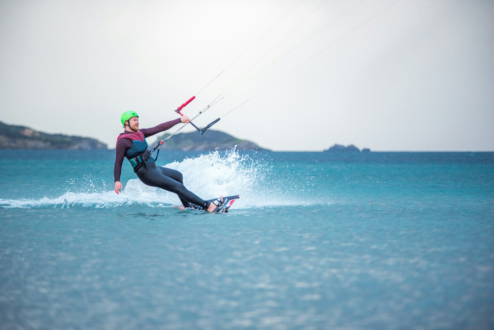
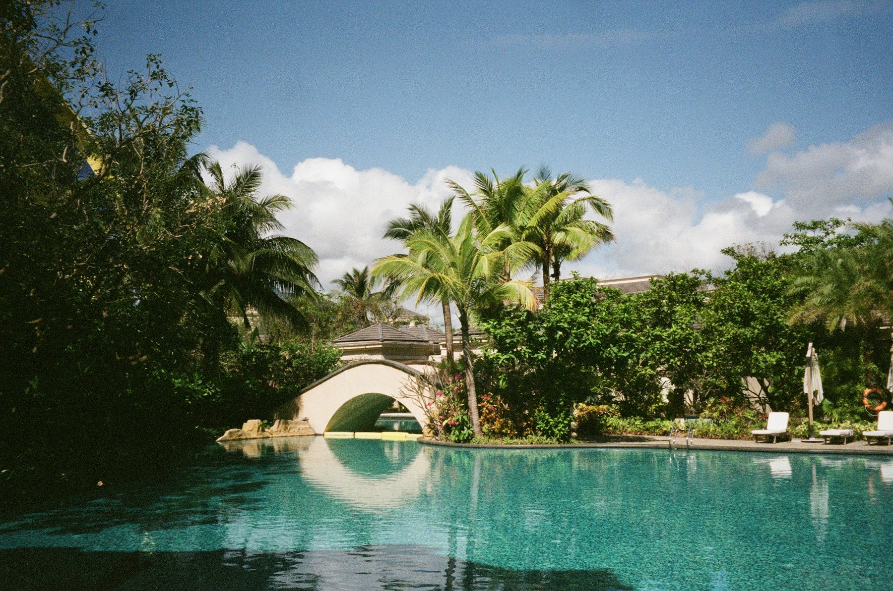
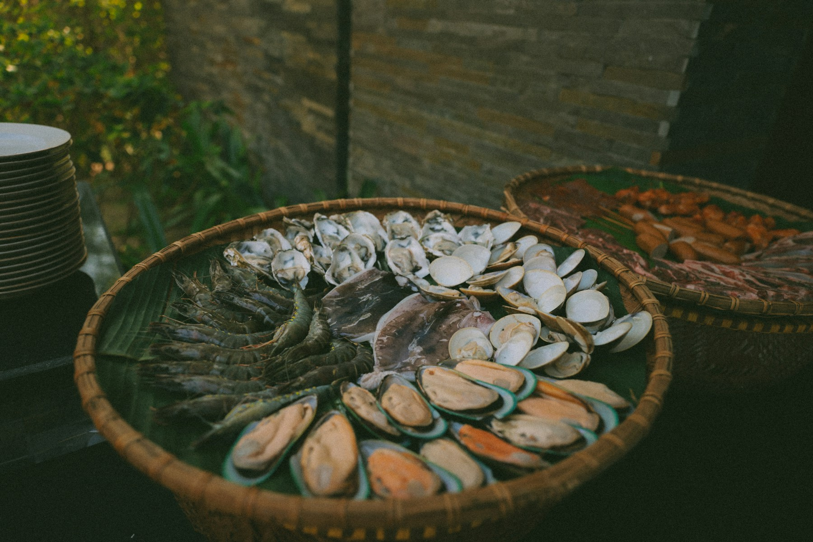
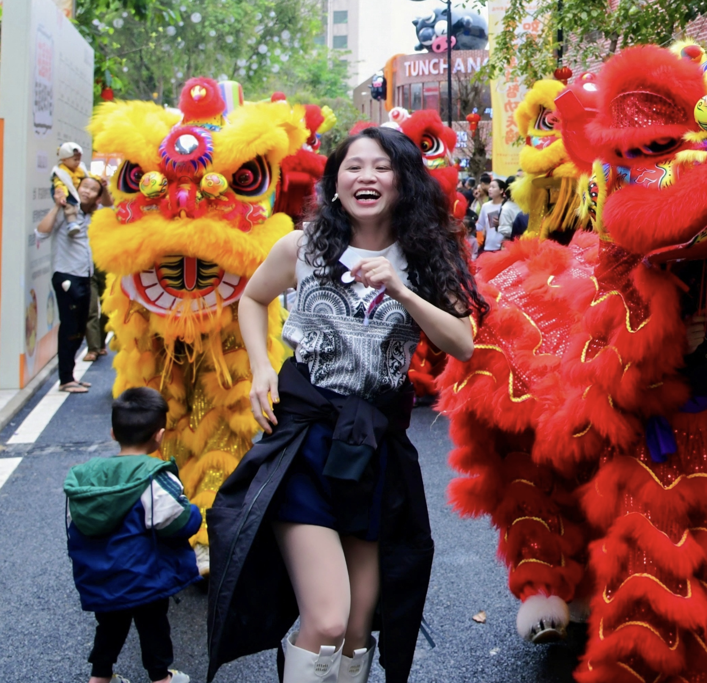
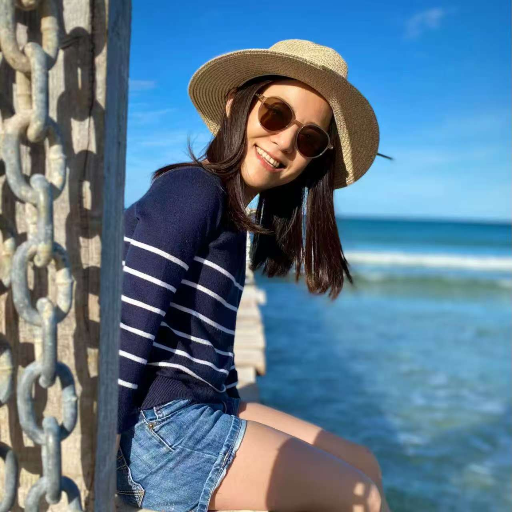

Sanya Beaches, Lingshui Marine Projects
Enjoy sea activities, tropical coastlines and relaxed resort stays that are ideal all year, including winter.
Talk to our travel team
Hainan Journeys
As China’s Free Trade Port and “China’s Hawaii,” Hainan offers beaches, city life, rocket launches, hot springs and unforgettable cuisine.
Journey Themes
Enjoy sea activities, tropical coastlines and relaxed resort stays that are ideal all year, including winter.
From urban tradition to China’s national rocket launch site, plus coconut chicken, Wenchang chicken and Dongshan mutton.
Destinations
Hainan Island, as China’s Free Trade Port, is known as “China’s Hawaii.” Here, every flavor and every view is a harmony of culture, nature, and innovation.
Beaches & Romance Show


Tradition & City Life


Rocket Launch & Hot Springs

Marine Activities & Fresh Seafood



About The Team

Co-Founder
Yan leads operations, brand strategy and cross-cultural journey design across Europe and China.
Advisor & Technology Lead
Kevin supports quality, systems and execution standards to keep every journey delivery reliable.

亲子向导
“世界那么大，我们一起去看看”。瑞士酒店管理MBA硕士，定居瑞士12年，现居琉森。语言：中文（普通话）、英语、德语。沉稳可靠又充满热情，热爱大自然，常年徒步与滑雪，几乎走遍瑞士经典与小众路线。拥有7年酒店行业经验，更是瑞士琉森图书馆中文故事发起人，能够快速理解客人需求，从容应对旅途中的各种变化；同时具备5年瑞士中文学校教学经验，擅长与孩子互动，让亲子出行更加轻松有趣。无论是雪山、湖泊，还是城市与小镇，她都会带你用更真实、更舒适的方式，体验瑞士。🌍 和Stacey一起，不只是旅行，而是走进瑞士的生活。
创始人，旅行规划师，资深亲子教育向导
“只有一个人在旅行时，才听得到自己的声音，它会告诉你，这世界比想象中的宽阔。”漫行瑞士创始人，瑞士酒店管理专业硕士，欧洲认证烘培甜品师，瑞士国家旅游局认证“瑞士旅行专家”。五年亲子旅行社创始人经历，定居瑞士19年。是爱吃辣的重庆女生，也是开口能说流利瑞士德语的半个瑞士人。擅长规划旅行路线，安排食宿，当地餐酒文化介绍。熟知瑞士各州的民俗文化和活动，丰富的亲子大团向导经验。
Contact
Share your priorities, preferred pace and travel style. We will prepare a private proposal designed around you.
 Email A Travel Designer
Email A Travel Designer